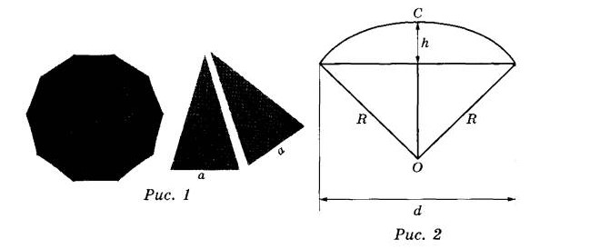
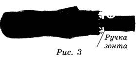

Две подруги Катя и Таня задумались о том, как рассчитать площадь поверхности
зонта. На
первый взгляд зонт кажется круглым, а его купол напоминает часть сферы (сферический
сегмент). Но если
присмотреться, то видно, что купол зонта состоит из десяти отдельных клиньев, натянутых на
каркас из
десяти спиц (рис. 1). Сферическая форма в раскрытом состоянии достигается за счёт гибкости
спиц и
эластичности ткани, из которой изготовлен зонт.

Катя и Таня сумели измерить расстояние между концами соседних спиц а. Оно оказалось равно
34 см. Высота купола зонта h (рис. 2) оказалась равна 25 см, а расстояние d между концами спиц,
образующих дугу окружности, проходящей через вершину зонта, — ровно 110 см.
Задание 1

Длина зонта в сложенном виде равна 26,5 см и складывается из длины ручки (рис. 3) и
трети длины спицы (зонт в три сложения). Найдите длину спицы, если длина ручки зонта равна 6,3 см.
?
Сначала вычтите из длины сложенного зонта длину ручки. Вы получите треть длины спицы.
Умножьте полученное число на 3.
Задание 2
Поскольку зонт сшит из треугольников, рассуждала Катя, площадь его поверхности можно
найти как сумму площадей треугольников. Вычислите площадь поверхности зонта методом Кати, если
высота каждого равнобедренного треугольника, проведённая к основанию, равна 58,2 см. Ответ дайте в
квадратных сантиметрах с округлением до десятков.
?
Вычислите площадь одного треугольника, применив формулу S = ah/2, где a – основание, h –
высота.
Умножьте полученный результат на 12.
Задание 3
Таня предположила, что купол зонта имеет форму сферического сегмента. Вычислите
радиус R сферы купола, зная, что ОС = R (рис. 2). Ответ дайте в сантиметрах.
?
Рассмотрите прямоугольный треугольник,
в котором один катет – это половина
расстояния между концами спиц, а второй
катет – это разность радиуса и высоты
купола зонта.
Составьте уравнение, используя теорему
Пифагора c2 = a2 + b2 (с – гипотенуза,
а, b – катеты).
Задание 4
Таня нашла площадь купола зонта как площадь поверхности сферического сегмента по
формуле S = 2πRh, где R — радиус сферы, a h — высота сегмента. Рассчитайте площадь поверхности
купола способом Тани. Число π округлите до 3,14. Ответ дайте в квадратных сантиметрах с округлением
до целого.
?
Вычислите площадь, подставив в формулу
S = 2πRh все известные нам значения.
Не забудьте округлить ответ.
Задание 5
Рулон ткани имеет длину 20 м и ширину 150 см. На фабрике из этого рулона были
вырезаны треугольные клинья для 26 зонтов, таких же, как зонт, который был у Кати и Тани. Каждый
треугольник с учётом припуска на швы имеет площадь 1050 кв. см. Оставшаяся ткань пошла в обрезки.
Сколько процентов ткани рулона пошло в обрезки?
?
Обратите внимание, что рулон имеет
форму прямоугольника, значит, её площадь
вычисляется по формуле S = a ∙ b.
Вычислите площадь всех клиньев у
15 зонтов.
Вычислите площадь обрезков, найдя разность площади рулона и всех клиньев.
Найдите, сколько процентов площади
всей ткани составляют обрезки, составив пропорцию.